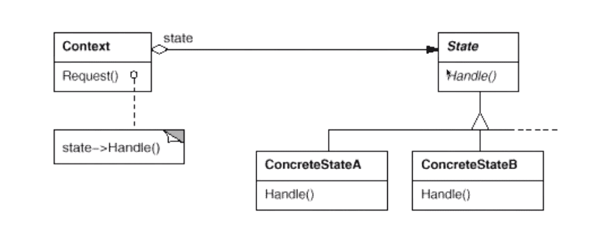
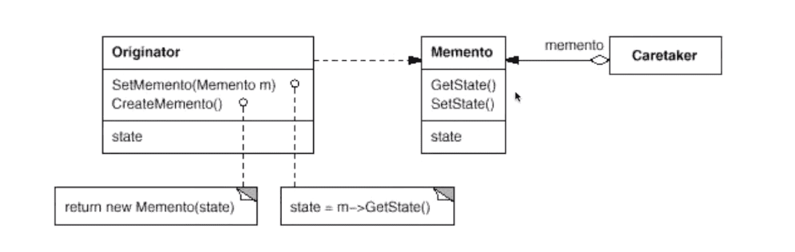

“状态变化类”设计模式（C++）
在组件构建过程中，某些对象的状态经常面临变化，如何对这些变化进行有效的管理？同时又维持高层模块的稳定？“状态变化”模式为这一问题提供了一种解决方案。
状态模式（State）
在软件构建过程中，某些对象的状态如果改变，其行为也会随之而发生变化，比如文档处于只读状态，其支持的行为和读写状态支持的行为就可能完全不同。如何在运行时根据对象的状态来透明地更改对象的行为？而不会为对象操作和状态转化之间引入紧耦合？

模式定义：允许一个对象在其内部状态改变时改变它的行为，从而使对象看起来似乎修改了其行为。
struct State {
State* nextState;
virtual void foo() = 0;
virtual ~State() {}
};
class StateA : public State {
static State* pState;
public:
static State* getStateInstance() { // 单例模式；
if (pState == nullptr) { pState = new StateA(); }
return pState;
}
void foo();
};
State* StateA::pState = nullptr;
class StateB : public State {
static State* pState;
public:
static State* getStateInstance() {
if (pState == nullptr) { pState = new StateB(); }
return pState;
}
void foo() {
std::cout << "[StateB foo]" << std::endl;
nextState = StateA::getStateInstance();
}
};
State* StateB::pState = nullptr;
void StateA::foo() {
std::cout << "[StateA foo]" << std::endl;
nextState = StateB::getStateInstance();
}
class Application {
State* pState;
public:
Application(State* pState) : pState(pState) {}
void process() {
pState->foo();
pState = pState->nextState;
}
};
int main(int argc, char** argv) {
auto pStateA = new StateA();
Application app(pStateA);
app.process(); // "[StateA foo]";
app.process(); // "[StateB foo]";
app.process(); // "[StateA foo]";
delete pStateA;
return 0;
}总结：
- State 模式将所有与一个特定状态相关的行为都放入一个 State 的子类对象中，在对象状态切换时，切换相应的对象；但同时维持 State 的接口，这样实现了具体操作与状态转换之间的解耦；
- 为不同的状态引入不同的对象，使得状态转换变得更加明确，而且可以保证不会出现状态不一致的情况，因为转换是原子性的 —— 即要么彻底转换过来，要么不转换；
- 如果 State 对象没有实例变量，那么各个上下文可以共享同一个 State 对象，从而节省对象开销；
每一个状态（变化）下有不同的操作，且这些操作可以被基类完全概括（稳定），并且在调用之后会在不同状态之间跳转。
备忘录模式（Memento）
在软件构建过程中，某些对象的状态在转换过程中，可能由于某种需要，要求程序能够回溯到对象之前处于某个时间点的状态。如果使用一些公有接口来让其他对象得到对象的状态，则会暴露对象的细节实现。如何实现对象状态的良好保存与恢复？但同时又不会因此而破坏对象本身的封装性。

模式定义：在不破坏封装性的前提下，捕获（存储）一个对象的内部状态，并在该对象之外保存这个状态。这样以后就可以将该对象恢复到原先保存的状态。
总结：
- 备忘录（Memento）存储原发器（Originator）对象的内部状态，在需要时恢复其状态；
- Memento 模式的核心是信息隐藏，即 Originator 需要向外界隐藏信息，保持其封装性。但同时又需要将状态保持到外界（Memento）；
- 由于现代语言运行时（C#，Java 等）都具有相当的对象序列化支持，因此往往采用效率较高、又较容易正确实现的序列化方案来实现 Memento 模式；